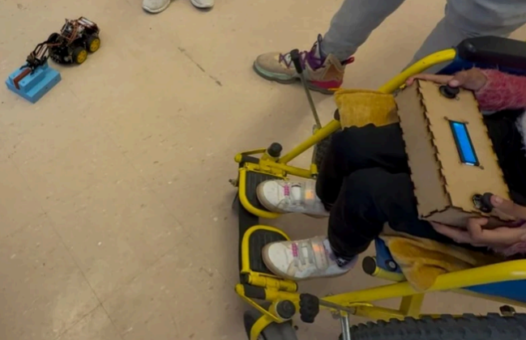
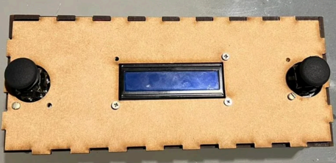
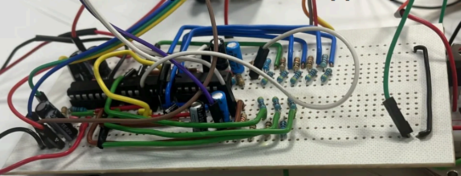

Remote Robotic Manipulator
Skills gained: Electronics (Proteus 8 Professional), microcontroller programming (MPLAB), Programming (Arduino, C), and user-centered design (SolidWorks) (SolidWorks)
This project describes the design and development of an assistive mechatronic system aimed at supporting a 9-year-old patient at the Centro de Rehabilitación Integral de Querétaro (CRIQ). The system consists of a miniature robot controlled remotely, equipped with a robotic arm and a claw, designed to facilitate everyday tasks and promote the patient’s independence.

The design integrates sensors, actuators, and microcontrollers, applying principles of industrial automation and control logic. From an electronics perspective, the system uses joysticks as input devices and an LCD screen as a human-machine interface, all managed by a PIC18F4550 microcontroller. To ensure precision and reliability, the joystick signals are conditioned using operational amplifiers and window comparators.
Control is organized into operation modes to handle either the robotic arm or the robot’s wheels, allowing the patient to interact simply and effectively. The controller was designed with comfort and accessibility in mind, featuring a box-like structure that can rest on the patient’s legs and joysticks without hard-to-press buttons.

The actuators include four DC motors for mobility and three MG90S servomotors for the arm and claw, with movement limits set to prevent damage. The microcontroller communicates via Bluetooth with an Arduino that controls the actuators, while the LCD provides real-time feedback on the selected mode and direction. During development, hardware challenges were addressed, such as signal instability in the comparators and overstrain in the claw servomotors. Physical tests were conducted, and a soldered circuit board was implemented to improve system reliability.

The project demonstrated that it is possible to integrate electronics, control systems, and mechanical design to create customized assistive solutions. The patient successfully interacted with the robot, showing the system’s effectiveness as a support tool for children with motor disabilities.